vignettes/Stats_Descriptives.Rmd
Stats_Descriptives.Rmd
library(lubridate) #Pour représenter l'évolution des accidents par année
#>
#> Attachement du package : 'lubridate'
#> The following objects are masked from 'package:base':
#>
#> date, intersect, setdiff, union
library(tidyverse)
#> -- Attaching packages --------------------------------------- tidyverse 1.3.0 --
#> v ggplot2 3.3.2 v purrr 0.3.4
#> v tibble 3.0.4 v dplyr 1.0.2
#> v tidyr 1.1.2 v stringr 1.4.0
#> v readr 1.4.0 v forcats 0.5.0
#> -- Conflicts ------------------------------------------ tidyverse_conflicts() --
#> x lubridate::as.difftime() masks base::as.difftime()
#> x lubridate::date() masks base::date()
#> x dplyr::filter() masks stats::filter()
#> x lubridate::intersect() masks base::intersect()
#> x dplyr::lag() masks stats::lag()
#> x lubridate::setdiff() masks base::setdiff()
#> x lubridate::union() masks base::union()
library(ggplot2)
library(ACC)
#>
#> Attachement du package : 'ACC'
#> The following object is masked from 'package:tidyr':
#>
#> populationEn introduction, nous souhaitons souligner que la documentation des données disponible sur data.gouv.fr indique des changements dans l’enregistrement des accidents a eu lieu à partir de 2019. Ces changements ont pour effet de changer les modalités de certaines variables, créer des variables (avec des valeurs manquantes pour les accidents passés).
Parmi ces changements, au moins une des modalités de la variable que nous souhaitons modéliser par la suite, grav, n’est plus qualifiée de la même manière que par le passé.
Avertissement : Les données sur la qualification de blessé hospitalisé depuis l’année 2018 ne peuvent être comparées aux années précédentes suite à des modifications de process de saisie des forces de l’ordre. L’indicateur « blessé hospitalisé » n’est plus labellisé par l’autorité de la statistique publique depuis 2019.
Considérant la profondeur d’historique disponible, nous avons préféré écarter les données concernant l’année 2019 de l’étude. Néanmoins, à titre informatif, ces données sont présentes dans l’analyse des variables qui suit.
Ces données n’étant pas conservées pour l’étude elles ne sont présentes dans le package, ainsi nous les récupérons uniquement pour ce document dans le bloc de code suivant, ce qui permet par ailleurs d’illustrer les fonctions qui ont permis la création du reste des données.
carac_2019 <- dl_caracteristiques(2019L) %>%
recod_caracteristiques()
#> i Chargement de caracteristiques-2019.csv
usagers_2019 <- dl_usagers(2019L) %>%
recod_usagers()
#> i Chargement de usagers-2019.csv
#> Warning: The following named parsers don't match the column names: secu
vehic_2019 <- dl_vehicules(2019L) %>%
recod_vehicules()
#> i Chargement de vehicules-2019.csv
lieux_2019 <- dl_lieux(2019L) %>%
recod_lieux()
#> i Chargement de lieux-2019.csv
accid_2019 <- create_table_accidents(carac_2019, usagers_2019, lieux_2019, vehic_2019)
accidents <- bind_rows(accid_2019, accidents)
regr_accidents <- accidents %>%
mutate(annee = year(date_acc)) %>%
group_by(annee) %>%
summarise(nb_accidents = n_distinct(Num_Acc))
#> `summarise()` ungrouping output (override with `.groups` argument)
ggplot(regr_accidents) +
aes(x = annee, y = nb_accidents) +
geom_histogram(stat = "identity", fill = "#440154") +
labs(x = "Année",
y = "Nombre d'accidents",
title = "Nombre d'accidents par année") +
theme_light()
#> Warning: Ignoring unknown parameters: binwidth, bins, pad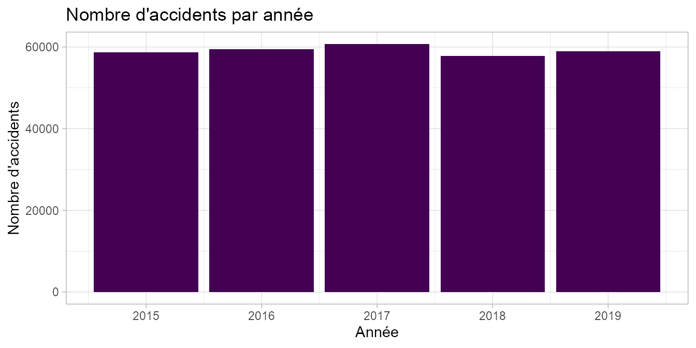
regr_accidents
#> # A tibble: 5 x 2
#> annee nb_accidents
#> <dbl> <int>
#> 1 2015 58654
#> 2 2016 59432
#> 3 2017 60701
#> 4 2018 57783
#> 5 2019 58840Nous pouvons noter que le nombre d’accidents est relativement constant depuis 2015, à un niveau proche des 60 000 par an (entre 57 783 en 2018 et 60 701 en 2017). On a observé une baisse du nombre d’accidents sur les années 2018 et 2019 comparativement à l’année 2017, année pour laquelle le nombre d’accidents est maximal sur la période 2015-2019.
regr_tues <- accidents %>%
filter(grav == "Tué") %>%
mutate(annee = year(date_acc)) %>%
#select(Num_Acc,annee,grav) %>%
group_by(annee,grav) %>%
summarise(nb_accidents_tues = n_distinct(Num_Acc))
#> `summarise()` regrouping output by 'annee' (override with `.groups` argument)
ggplot(regr_tues) +
aes(x = annee, y = nb_accidents_tues) +
geom_histogram(stat = "identity", fill = "#440154") +
labs(x = "Année", y = "Nombre de tués",title = "Nombre de décédés d'un accident de la route par année") +
theme_light()
#> Warning: Ignoring unknown parameters: binwidth, bins, pad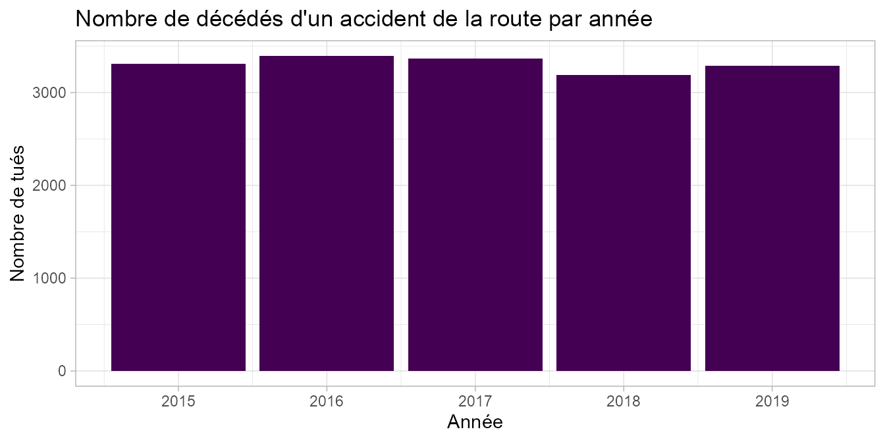
regr_tues
#> # A tibble: 5 x 3
#> # Groups: annee [5]
#> annee grav nb_accidents_tues
#> <dbl> <chr> <int>
#> 1 2015 Tué 3306
#> 2 2016 Tué 3393
#> 3 2017 Tué 3360
#> 4 2018 Tué 3186
#> 5 2019 Tué 3284Tout comme le nombre d’accidents, le nombre de décédés dans un accident de la route est relativement constant au cours du temps (entre 3 186 décédés en 2018 et 3 393 en 2016). Nous notons par ailleurs que le nombre de décès évolue concomittament au nombre d’accidents. Le nombre d’accidents étant plus faible sur les années 2018 et 2019 (cf. ci-dessus), nous observons que le nombre de tués l’est également. Nous relevons néanmoins que la proportion de tués sur la route est plus faible en 2017 qu’en 2016 (5,53 % en 2017 versus 5,7 % en 2016), bien que l’année 2017 soit le point haut des 5 années observées.
acc_par_mois <- accidents %>%
mutate(annee = year(date_acc)) %>%
group_by(annee,mois_acc) %>%
summarise(nb_accidents_mois = n_distinct(Num_Acc))
#> `summarise()` regrouping output by 'annee' (override with `.groups` argument)
acc_par_mois %>%
mutate(mois_acc = fct_relevel(mois_acc, rev(as.character(levels(mois_acc))))) %>%
ggplot() +
aes(x = mois_acc, y=nb_accidents_mois) +
geom_bar(stat = "identity",fill = "#0c4c8a") +
labs(x = "", y = "Nombre d'accidents",
title = "Répartition des accidents par année et par mois") +
theme_light() +
facet_wrap(vars(annee)) +
coord_flip() # Pour lire les libellés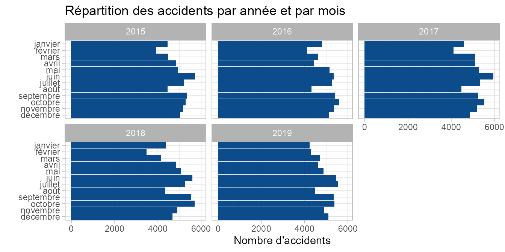
# theme(axis.text.x = element_text(angle = 90))Tous les ans, le nombre d’accidents est faible aux mois de février et d’août. Concernant le mois d’août, période de vacances d’été, nous pouvons penser qu’il y a également moins d’usagers. A contrario, les mois de juin et juillet sont tous les ans des mois fortement accidentogènes.
regr_accidents_date <- accidents %>%
mutate(annee = year(date_acc)) %>%
# filter(annee == 2019) %>%
group_by(date_acc,annee) %>%
summarise(nb_accidents_date = n_distinct(Num_Acc))
#> `summarise()` regrouping output by 'date_acc' (override with `.groups` argument)
ggplot(regr_accidents_date) +
aes(x = date_acc, y = nb_accidents_date) +
geom_line(size = 1L, colour = "#0c4c8a") +
facet_wrap(~ annee, scales = "free_x") +
labs(x = "Date", y = "Nombre d'accidents",
title = "Répartition des accidents mortels par heure de la journée") +
theme_light()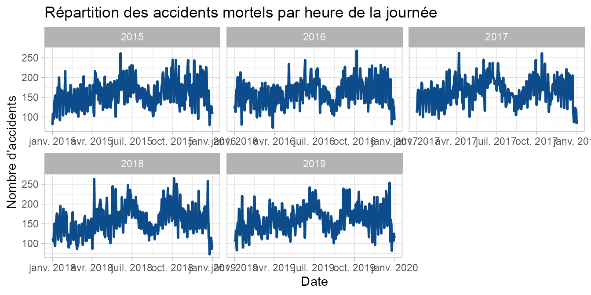
Nous retrouvons l’effet “vacances d’été” évoqué ci-dessus, signe d’une saisonalité. Nous n’observons pas d’effet année.
acc_par_jour <- accidents %>%
mutate(annee = year(date_acc)) %>%
group_by(jour_acc,annee) %>%
summarise(nb_accidents_jour = n_distinct(Num_Acc))
#> `summarise()` regrouping output by 'jour_acc' (override with `.groups` argument)
acc_par_jour %>%
mutate(jour_acc = fct_relevel(jour_acc, rev(as.character(levels(jour_acc))))) %>%
ggplot() +
aes(x = jour_acc, y = nb_accidents_jour) +
geom_bar(stat = "identity", fill = "#0c4c8a") +
labs(x = "Jour de l'accident", y = "Nombre d'accidents",
title = "Nombre d'accidents par jour de la semaine et par année") +
theme_light() +
facet_wrap(vars(annee)) +
coord_flip()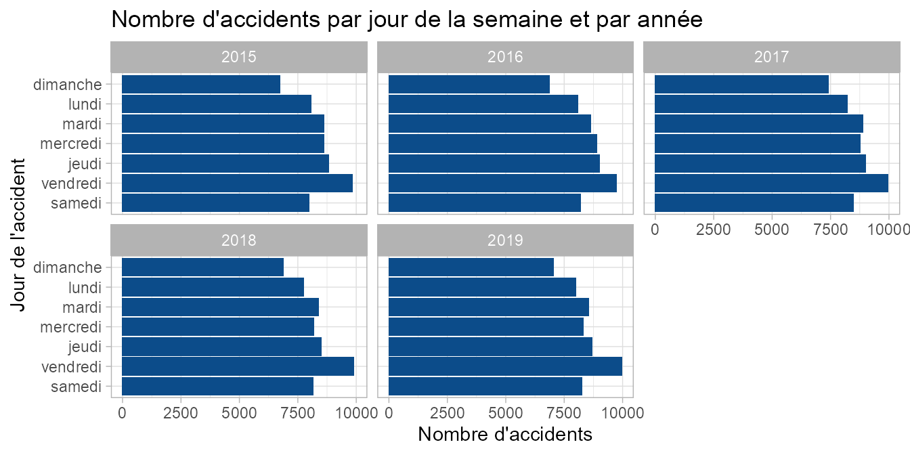
# theme(axis.text.x = element_text(angle = 90))Quelle que soit l’année, nous notons que le vendredi est le jour où se produisent le plus d’accidents.
regr_heure <- accidents %>%
group_by(heure) %>%
summarise(nb_accidents_h = n_distinct(Num_Acc))
#> `summarise()` ungrouping output (override with `.groups` argument)
ggplot(regr_heure) +
aes(x = heure, y = nb_accidents_h) +
geom_bar(stat = "identity", fill = "#0c4c8a") +
labs(x = "Heure", y = "Nombre d'accidents", title = "Répartition des accidents par heure de la journée") +
theme_light()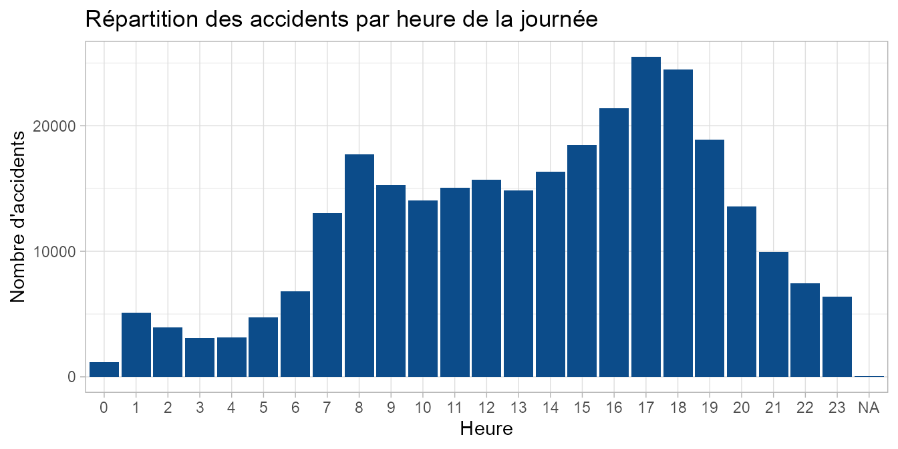
La tranche horaire 16h-19h est la plus accidentogène. Néanmoins, nous pouvons penser que c’est aussi la période de la journée où les usagers sont le plus présents sur la route.
regr_heure_tues <- accidents %>%
filter(grav=="Tué") %>%
group_by(heure) %>%
summarise(nb_accidents_h_tues = n_distinct(Num_Acc))
#> `summarise()` ungrouping output (override with `.groups` argument)
ggplot(regr_heure_tues) +
aes(x = heure, y = nb_accidents_h_tues) +
geom_bar(stat = "identity", fill = "#0c4c8a") +
labs(x = "Heure", y = "Nombre d'accidents", title = "Répartition des accidents mortels par heure de la journée") +
theme_light()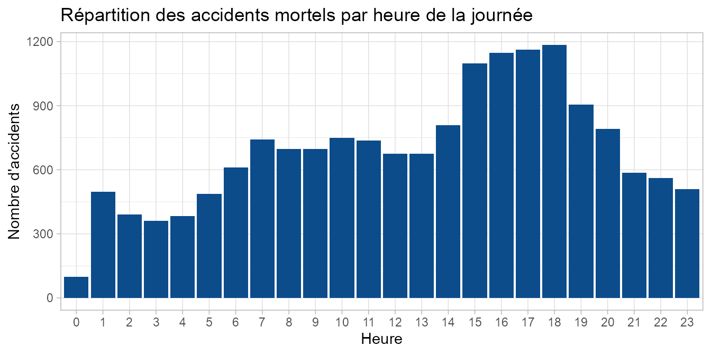
Les accidents mortels se concentrent quant à eux essentiellement sur la tranche horaire 15h - 18h.
repart_sexe <- accidents %>%
mutate(annee = year(date_acc)) %>%
filter(catu=="Conducteur") %>%
group_by(annee,sexe) %>%
summarise(nb_accidents_sexe = n_distinct(Num_Acc))
#> `summarise()` regrouping output by 'annee' (override with `.groups` argument)
ggplot(repart_sexe) +
aes(x = sexe, y = nb_accidents_sexe, fill = sexe) +
geom_bar(stat = "identity") +
scale_fill_hue() +
labs(x = "Sexe", y = "Nombre d'accidents", fill = "Sexe",
title = "Répartition des accidents conducteurs de la route par année et par sexe") +
theme_light() +
facet_wrap(vars(annee))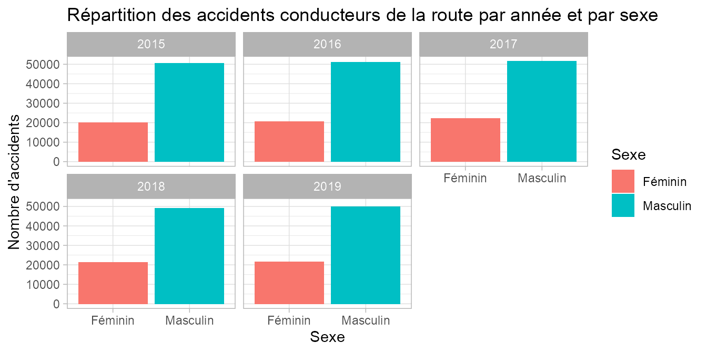
repart_sexe %>%
spread(sexe, nb_accidents_sexe)
#> # A tibble: 5 x 3
#> # Groups: annee [5]
#> annee Féminin Masculin
#> <dbl> <int> <int>
#> 1 2015 20036 50409
#> 2 2016 20608 50969
#> 3 2017 22248 51656
#> 4 2018 21347 49068
#> 5 2019 21580 49891Quelle que soit l’année, on note que les femmes sont impliquées dans 2 à 3 fois moins d’accidents que les hommes.
Nous étudions la répartition des accidents selon le sexe et la gravité plus en avant dans la suite du présent document.
gravite <- accidents %>%
group_by(grav) %>%
summarise(nb_accidents_gravite = n_distinct(Num_Acc)) %>%
#Pour l'ordre des modalités dans le graphique :
mutate(grav = fct_relevel(grav, "Indemne","Blessé léger","Blessé hospitalisé","Tué"))
#> `summarise()` ungrouping output (override with `.groups` argument)
ggplot(gravite) +
aes(x = grav, y = nb_accidents_gravite, fill = grav) +
geom_bar(stat = "identity") +
scale_fill_viridis_d(option = "inferno", direction = -1) +
labs(x = "Gravité",
y = "Nombre d'accidents",
fill="Gravité",
title = "Gravité des accidents ayant eu lieu de 2015 à 2019") +
theme_light()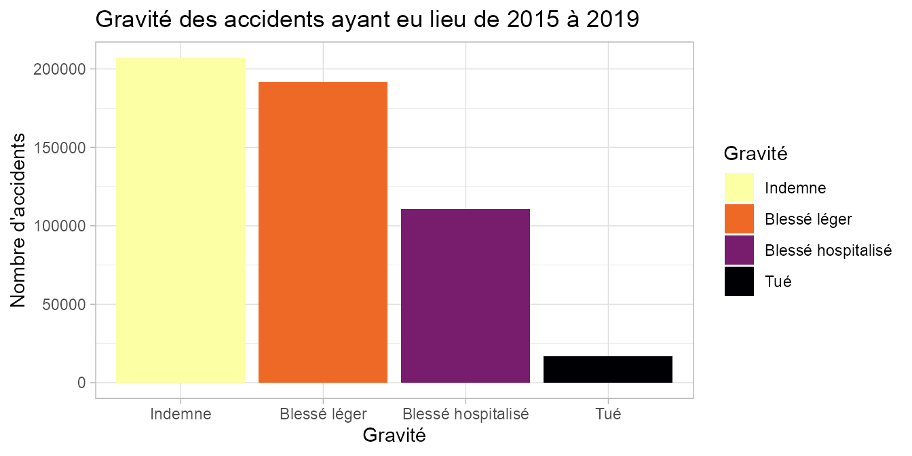
sum_grav <- gravite %>%
mutate(nb_tot = sum(nb_accidents_gravite)) %>%
mutate(prop = (nb_accidents_gravite / nb_tot)*100)
sum_grav
#> # A tibble: 4 x 4
#> grav nb_accidents_gravite nb_tot prop
#> <fct> <int> <int> <dbl>
#> 1 Blessé hospitalisé 110698 525723 21.1
#> 2 Blessé léger 191395 525723 36.4
#> 3 Indemne 207101 525723 39.4
#> 4 Tué 16529 525723 3.14Sur les 5 années observées, les proportions sont les suivantes : - Blessés hospitalisés 21 % ; - Blessés légers 36 % ; - Indemnes 39 % ; - Tués 3 %. Ainsi, on sort indemne d’un accident de la circulation routière 4 fois sur 10.
acc_sexe_grav <- accidents %>%
group_by(sexe,grav) %>%
summarise(nb_accidents_sexe_grav = n_distinct(Num_Acc))
#> `summarise()` regrouping output by 'sexe' (override with `.groups` argument)
ggplot(acc_sexe_grav) +
aes(x = sexe, y = nb_accidents_sexe_grav, fill = grav) +
geom_bar(stat = "identity") +
scale_fill_hue() +
labs(x = "Sexe", y = "Nombre d'accidents", fill = "Gravité",
title="Répartition des accidents selon le sexe et la gravité de 2015 à 2019") +
theme_light()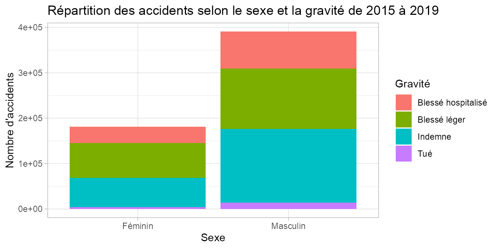
sum_sexe_grav <- acc_sexe_grav %>%
group_by(sexe) %>%
summarise(nb_accidents_sex = sum(nb_accidents_sexe_grav))
#> `summarise()` ungrouping output (override with `.groups` argument)
acc_sexe_grav_1 <- acc_sexe_grav %>%
left_join(sum_sexe_grav,by="sexe") %>%
mutate(prop = (nb_accidents_sexe_grav / nb_accidents_sex)*100)
acc_sexe_grav_1
#> # A tibble: 8 x 5
#> # Groups: sexe [2]
#> sexe grav nb_accidents_sexe_grav nb_accidents_sex prop
#> <chr> <chr> <int> <int> <dbl>
#> 1 Féminin Blessé hospitalisé 35624 180786 19.7
#> 2 Féminin Blessé léger 77050 180786 42.6
#> 3 Féminin Indemne 64187 180786 35.5
#> 4 Féminin Tué 3925 180786 2.17
#> 5 Masculin Blessé hospitalisé 81751 390791 20.9
#> 6 Masculin Blessé léger 132974 390791 34.0
#> 7 Masculin Indemne 162962 390791 41.7
#> 8 Masculin Tué 13104 390791 3.35Nous notons que les femmes ont été 2 fois moins impliquées que les hommes dans un accident de la route lors des années 2015 à 2019 (180 786 accidents pour les femmes contre 390 791 pour les hommes). Concernant la gravité des accidents, la représentation des classes “Blessé léger” et “Indemne” sont à l’inverse selon le sexe. Les femmes ont une représentation de blessés légers de 42 % (contre 35 % pour les hommes) pour une proportion d’indemnes de 35 % (contre 42 % pour les hommes). Les accidents impliquant des femmes sont également moins mortels que ceux impliquant des hommes (2,1 % contre 3,3 %). Enfin, les proportions de blessés hospitalisés sont équivalentes.
us_grav <- accidents %>%
group_by(catu,grav) %>%
summarise(nb_accidents_grav = n_distinct(Num_Acc))
#> `summarise()` regrouping output by 'catu' (override with `.groups` argument)
ggplot(us_grav) +
aes(x = catu, y = nb_accidents_grav, fill = grav) +
geom_bar(stat = "identity") +
scale_fill_hue() +
labs(x = "Catégorie d'usager", y = "Nombre d'accidents", fill = "Gravité",
title="Répartition des accidents selon la catégorie d'usager et la gravité") +
theme_light()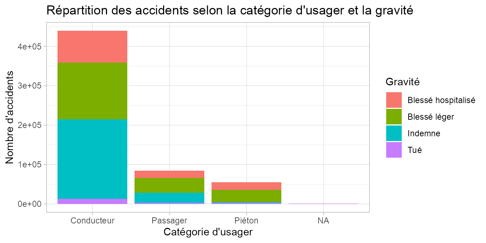
sum_catu_grav <- us_grav %>%
group_by(catu) %>%
summarise(nb_accidents_catu = sum(nb_accidents_grav))
#> `summarise()` ungrouping output (override with `.groups` argument)
us_grav_1 <- us_grav %>%
left_join(sum_catu_grav,by="catu") %>%
mutate(prop = (nb_accidents_grav / nb_accidents_catu)*100)
us_grav_1
#> # A tibble: 16 x 5
#> # Groups: catu [4]
#> catu grav nb_accidents_grav nb_accidents_catu prop
#> <chr> <chr> <int> <int> <dbl>
#> 1 Conducteur Blessé hospitalisé 80853 439292 18.4
#> 2 Conducteur Blessé léger 144181 439292 32.8
#> 3 Conducteur Indemne 202091 439292 46.0
#> 4 Conducteur Tué 12167 439292 2.77
#> 5 Passager Blessé hospitalisé 18706 84281 22.2
#> 6 Passager Blessé léger 37875 84281 44.9
#> 7 Passager Indemne 25253 84281 30.0
#> 8 Passager Tué 2447 84281 2.90
#> 9 Piéton Blessé hospitalisé 19405 54690 35.5
#> 10 Piéton Blessé léger 31562 54690 57.7
#> 11 Piéton Indemne 1102 54690 2.01
#> 12 Piéton Tué 2621 54690 4.79
#> 13 <NA> Blessé hospitalisé 268 797 33.6
#> 14 <NA> Blessé léger 497 797 62.4
#> 15 <NA> Indemne 17 797 2.13
#> 16 <NA> Tué 15 797 1.88Les accidents ayant eu lieu sur les 5 années étudiées impliquent très majoritairement des usagers conducteurs. Les passagers sont 5 fois moins représentés et les piétons 8 fois moins. Concernant la gravité, il y a 2 fois plus de piétons tués dans un accident de voiture que de conducteurs et passagers (pour lesquels la proportion de tués est équivalente). Nous notons également que le conducteur sort plus souvent indemne que le passager et le passager plus souvent blessé léger que le conducteur. Les passagers sont plus souvent blessés hospitalisés que les conducteurs (22 % contre 18 %).
acc_par_age <- accidents %>%
group_by(age,grav) %>%
summarise(nb_accidents_age = n_distinct(Num_Acc))
#> `summarise()` regrouping output by 'age' (override with `.groups` argument)
ggplot(acc_par_age) +
aes(x = age, y = nb_accidents_age, fill = grav) +
geom_histogram(stat = "identity") +
scale_fill_hue() +
labs(x = "Age", y = "Nombre d'accidents", fill = "Gravité",
title="Répartition des accidents par âge et par gravité") +
theme_light()
#> Warning: Ignoring unknown parameters: binwidth, bins, pad
#> Warning: Removed 3 rows containing missing values (position_stack).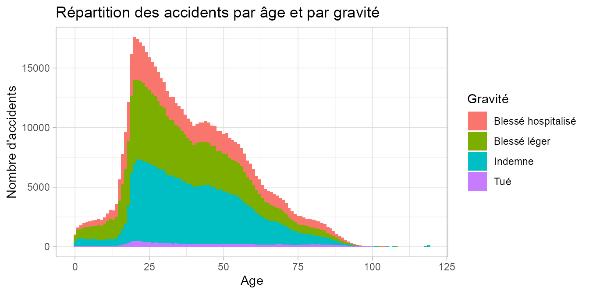
ggplot(acc_par_age) +
aes(x = age, y = nb_accidents_age, fill = grav) +
geom_histogram(stat = "identity") +
scale_fill_hue() +
facet_wrap(~ grav, scales = "free_y") +
labs(x = "Age", y = "Nombre d'accidents", fill = "Gravité",
caption="Note : Les échelles en ordonnées sont différentes sur ces graphiques.",
title="Répartition des accidents par âge et par gravité") +
theme_light()
#> Warning: Ignoring unknown parameters: binwidth, bins, pad
#> Warning: Removed 3 rows containing missing values (position_stack).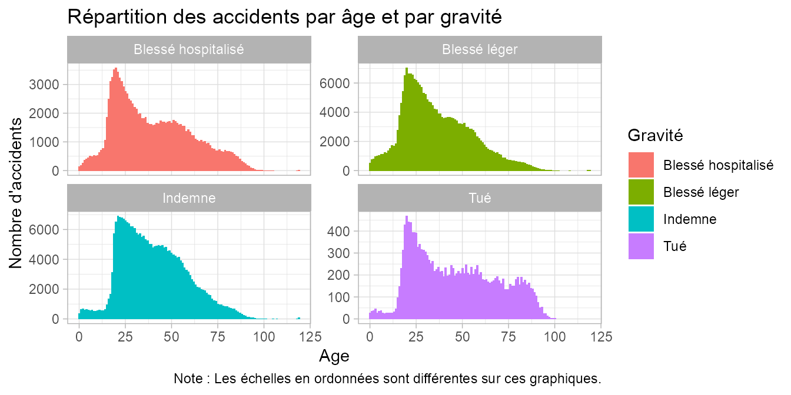
Les accidents de la route impliquent le plus souvent des usagers de la classe d’âge 18 - 35 ans. Néanmoins, nous pouvons penser que c’est aussi la classe d’âge la plus représentée sur la route, ce qui multiplie donc les risques d’accidents.
On remarque également un effet entre l’âge et la gravité de l’accident, en effet, les personnes âgées semblent plus touchées par les accidents mortels.
eclairage <- accidents %>%
group_by(grav,lum) %>%
summarise(nb_accidents_ecl = n_distinct(Num_Acc))
#> `summarise()` regrouping output by 'grav' (override with `.groups` argument)
ggplot(eclairage) +
aes(x = lum, y = nb_accidents_ecl, fill = grav) +
geom_bar(stat = "identity") +
scale_fill_viridis_d(option = "inferno") +
labs(x = "Conditions d'éclairage", y = "Nombre d'accidents",
fill = "Gravité", title = "Conditions d'éclairage et gravité des accidents") +
theme_light() +
coord_flip()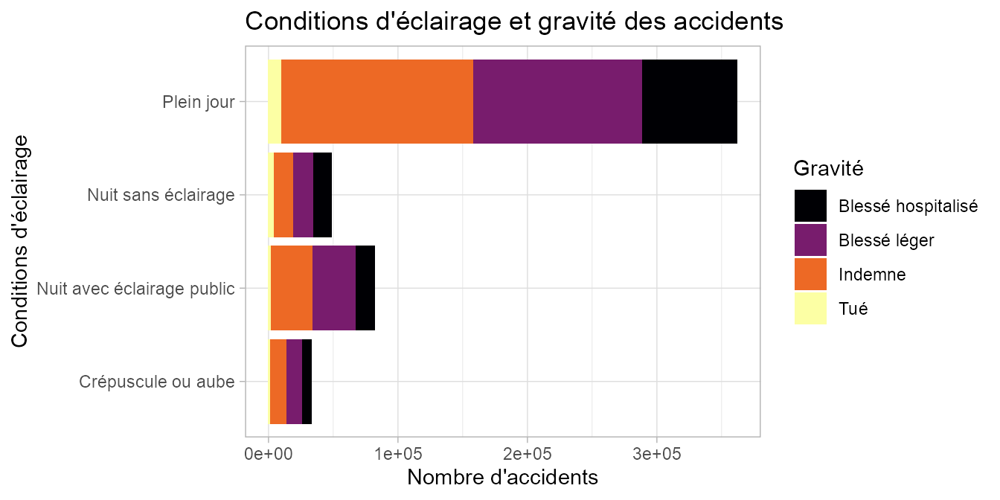
# theme(axis.text.x = element_text(angle = 90))
sum_eclr <- eclairage %>%
group_by(lum) %>%
summarise(nb_accidents_lum = sum(nb_accidents_ecl))
#> `summarise()` ungrouping output (override with `.groups` argument)
eclairage_1 <- eclairage %>%
left_join(sum_eclr,by="lum") %>%
mutate(prop = (nb_accidents_ecl / nb_accidents_lum)*100)
eclairage_1
#> # A tibble: 16 x 5
#> # Groups: grav [4]
#> grav lum nb_accidents_ecl nb_accidents_lum prop
#> <chr> <chr> <int> <int> <dbl>
#> 1 Blessé hospita~ Crépuscule ou aube 7493 32981 22.7
#> 2 Blessé hospita~ Nuit avec éclairage ~ 15038 82022 18.3
#> 3 Blessé hospita~ Nuit sans éclairage 14525 48565 29.9
#> 4 Blessé hospita~ Plein jour 73642 362155 20.3
#> 5 Blessé léger Crépuscule ou aube 11746 32981 35.6
#> 6 Blessé léger Nuit avec éclairage ~ 33325 82022 40.6
#> 7 Blessé léger Nuit sans éclairage 15383 48565 31.7
#> 8 Blessé léger Plein jour 130941 362155 36.2
#> 9 Indemne Crépuscule ou aube 12557 32981 38.1
#> 10 Indemne Nuit avec éclairage ~ 31992 82022 39.0
#> 11 Indemne Nuit sans éclairage 14579 48565 30.0
#> 12 Indemne Plein jour 147973 362155 40.9
#> 13 Tué Crépuscule ou aube 1185 32981 3.59
#> 14 Tué Nuit avec éclairage ~ 1667 82022 2.03
#> 15 Tué Nuit sans éclairage 4078 48565 8.40
#> 16 Tué Plein jour 9599 362155 2.65La majorité des accidents ont eu lieu en plein jour (362 155 accidents contre 48 565 pour la nuit sans éclairage et 82 022 pour la nuit avec éclairage à titre d’exemple). 8,4% des accidents ayant eu lieu la nuit sans éclairage ont été mortels.
repart_catr <- accidents %>%
group_by(catr,grav) %>%
summarise(nb_accidents_catr = n_distinct(Num_Acc))
#> `summarise()` regrouping output by 'catr' (override with `.groups` argument)
ggplot(repart_catr) +
aes(x = catr, y = nb_accidents_catr, fill = grav) +
geom_bar(stat = "identity") +
scale_fill_hue() +
labs(x = "Catégorie de route", y = "Nombre d'accidents",
fill = "Gravité", title = "Répartition des accidents par catégorie et par gravité") +
theme_light() +
theme(axis.text.x = element_text(angle = 90))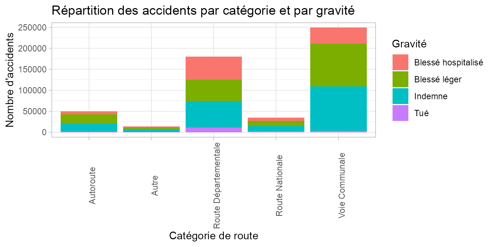
Les accidents ont majoritairement lieu sur les voies communales et routes départementales. La proportion de tués est supérieure lorsque l’accident se produit sur route départementale que lorsqu’il se produit sur voie communale.
ceint <- accidents %>%
group_by(secu1,grav) %>%
summarise(nb_accidents_ceint = n_distinct(Num_Acc))
#> `summarise()` regrouping output by 'secu1' (override with `.groups` argument)
ggplot(ceint) +
aes(x = secu1, y = nb_accidents_ceint, fill = grav) +
geom_bar(stat = "identity") +
scale_fill_hue() +
labs(x = "Equipement de sécurité", y = "Nombre d'accidents", fill = "Gravité",
title = "Lien entre port de la ceinture de sécurité et la gravité de l'accident") +
theme_light() +
theme(axis.text.x = element_text(angle = 90))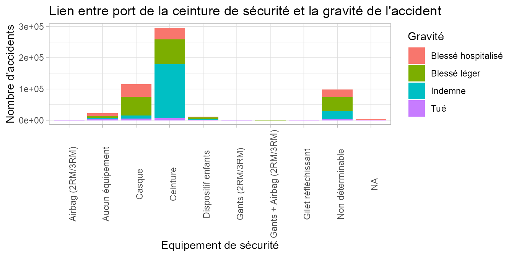
sum_ceint <- ceint %>%
group_by(secu1) %>%
summarise(nb_accidents_secu = sum(nb_accidents_ceint))
#> `summarise()` ungrouping output (override with `.groups` argument)
ceint_1 <- ceint %>%
left_join(sum_ceint,by="secu1") %>%
mutate(prop = (nb_accidents_ceint / nb_accidents_secu)*100)
ceint_1
#> # A tibble: 38 x 5
#> # Groups: secu1 [10]
#> secu1 grav nb_accidents_ceint nb_accidents_se~ prop
#> <chr> <chr> <int> <int> <dbl>
#> 1 Airbag (2RM/3RM) Blessé hospitalisé 50 130 38.5
#> 2 Airbag (2RM/3RM) Blessé léger 37 130 28.5
#> 3 Airbag (2RM/3RM) Indemne 30 130 23.1
#> 4 Airbag (2RM/3RM) Tué 13 130 10
#> 5 Aucun équipement Blessé hospitalisé 8754 22227 39.4
#> 6 Aucun équipement Blessé léger 7794 22227 35.1
#> 7 Aucun équipement Indemne 2968 22227 13.4
#> 8 Aucun équipement Tué 2711 22227 12.2
#> 9 Casque Blessé hospitalisé 40111 114561 35.0
#> 10 Casque Blessé léger 59854 114561 52.2
#> # ... with 28 more rowsLes usagers accidentés portaient majoritairement un casque, une ceinture de sécurité ou n’avaient aucun équipement. La classe “Non déterminable” est fortement représentée. 12 % des accidents concernant des usagers sans aucun équipement de sécurité sont mortels contre 2 % lorsque l’usager portait sa ceinture de sécurité. 58 % des usagers qui portaient leur ceinture de sécurité au moment de l’accident en sortent indemnes.